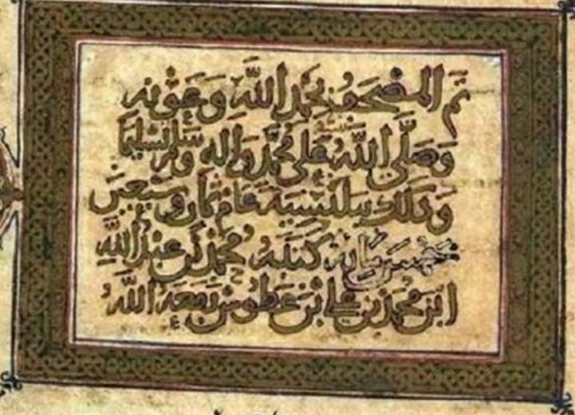
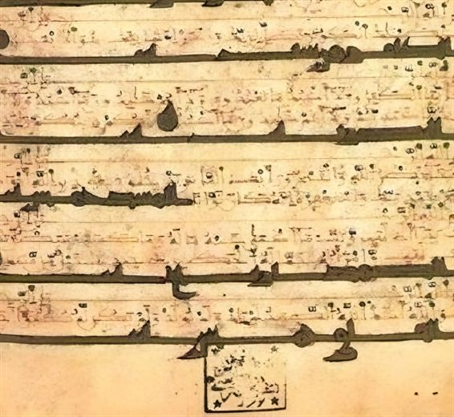
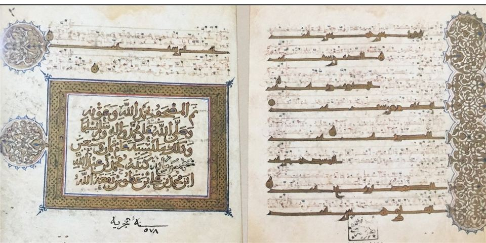

باقٍالتمام غير معلومغير مرقمن
- الناسخ
- محمد بن عبد الله بن محمد بن علي بن غطوس، ابن عبد الله بن غطوس صاحب مصاحف 556–558هـ
- المكان
- بلنسية، وقد دخلت في طاعة الموحدين سنة 567هـ / 1172م
- اليوم
- إسطنبول، مكتبة جامعة إسطنبول، A 6754
- الهيئة
- مجلد واحد مربع صغير؛ 18.2 × 17 سم
أول ما يُعرف من مصاحف آل غطوس المؤرخة بعد دخول بلنسية في طاعة الموحدين، فهو وحده منها يستوفي الشرط هنا. ونشر مارتن لينغز صفحتين منه (1976).
لم يُرقمن للعموم.
عينات من الكتابة عن قرب (3)اضغط للتكبير ←


